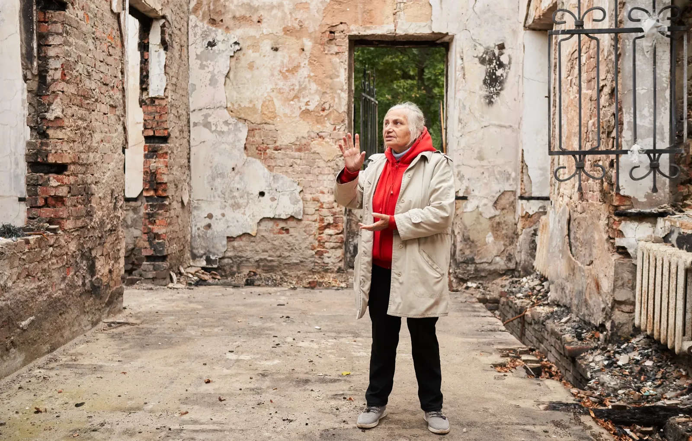
Unsuccessful attempt to catch Skovoroda
25.04.23
There are three museums of Hryhorii Skovoroda (philosopher of Ukrainian Cossack origin who lived and worked in the Russian Empire. He was a poet, a teacher, and a composer of liturgical music) in Ukraine: in Chornukhy, Poltava region, where he was born, in Pereyaslav, where he worked as a teacher, and in Skovorodynivka, Kharkiv region, where he visited a couple of times and where his earthly days ended. The museum in Skovorodynivka is the only one with a National status. It became a target of a Russian strike, which made no military sense at all.
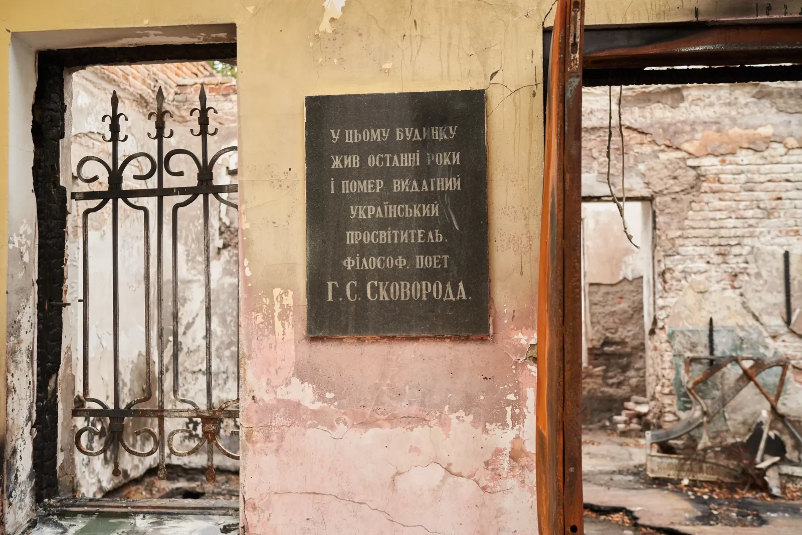
In 1732, Ivan Kovalivsky, the Sotnyk of Vilshany, with 36 serfs founded a hamlet Ivanivka on a bank of a large pond Zavaly and established here an estate with a park. His son, Andrii Ivanovych Kovalivsky (step-father of Vasyl Karasin, the founder of Kharkiv University) was a friend of Hryhorii Skovoroda and invited him to stay at Ivanivka. Here is how Skovoroda himself describes his stay at the estate in a letter to his disciple and friend Mykhailo Kovalynsky:
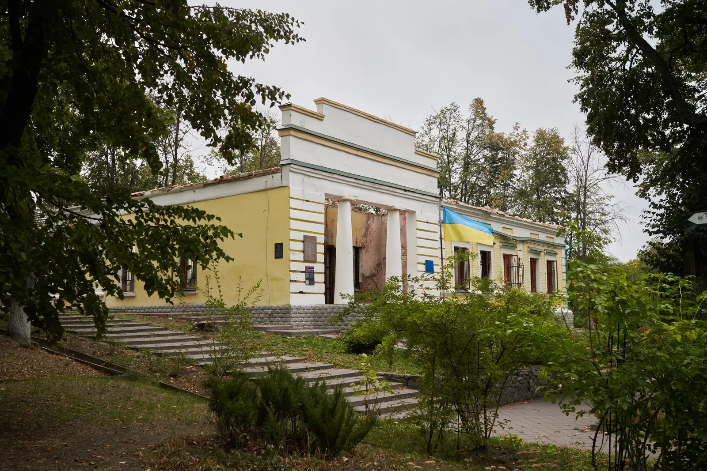
There are many legends about the life of Skovoroda. One of them says that he felt his death coming, dug himself a grave in the estate of Kovalivsky, and asked to be buried there; then he went to his chamber, washed, changed his clothes, and on Sunday, at dawn, died.
Skovoroda didn’t publish any of his writings during his lifetime, and his pedagogical career also wasn’t successful, as he often had conflicting views with the management of the Kharkiv College, where he was working. But even during his lifetime, he had a fame of a philosopher, and various landowners liked to invite him. He died in 1794 but got the renown and acknowledgment he deserved much later. This is aptly illustrated by the history of the museum in Skovorodynivka.
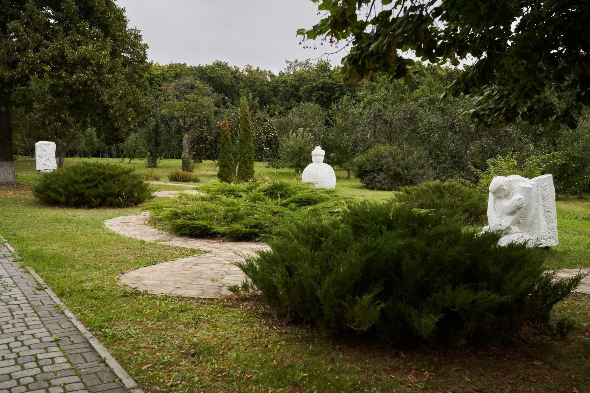
The Ivanivka hamlet grew to become a village Pan-Ivanivka, and the estate of Kovalivsky was owned first by Kuzins, then Zhylynskis, and then Kreiners. Only in 1874 did the philosopher’s grave get a marble tombstone engraved with a cross and his quotation: “The world tried to catch me but couldn’t”. There’s only a year of birth on the tombstone - 1722. The date of December, 3 became known only 220 years later, when the letters of the philosopher in Latin were being translated.
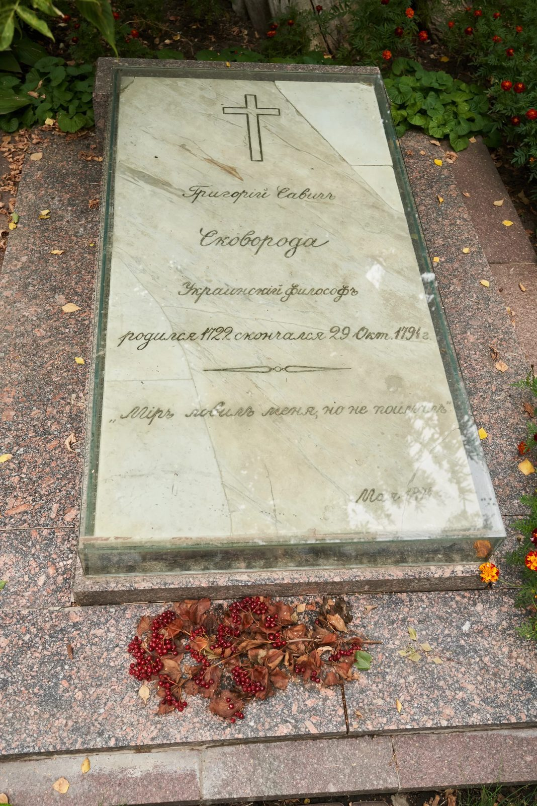
In 1890, Dmytro Bahalii (Ukrainian historian, philosopher, and public figure. Rector of the Emperor's Kharkiv University) came to Pan-Ivanivka and saw that the philosopher’s grave was neglected. In four years, he, along with the Kharkiv Historical-Philological Society, put it in order and wrote a fundamental work about Skovoroda for “Kyivska Staryna” (“Kyiv Antiquities” - monthly Ukrainian journal on ethnography, history, and literature).
After the Bolshevik Revolution, the Soviets made a pigsty in the house where the philosopher once lived. Later, the Soviet authorities opened a school there, and a collective farm named after Skovoroda in the village.
In 1926, on the 200th anniversary of the philosopher’s birth, Pan-Ivanivka was renamed Skovorodynivka, and the first monument to the philosopher was erected.
During WWII, an aerial bomb damaged the tombstone, and the traces are still visible to this day.
In 1944, Pavlo Tychyna (Ukrainian and Soviet poet, translator, and public figure) visited Skovorodynivka, and the part of the park near the oak, where Skovoroda liked to work, was put to order. Tychyna translated the philosopher’s cycle “Kharkiv Tales” into modern Ukrainian.
In 1962, the Museum of Skovoroda was opened at the school on a voluntary basis. Only in 1970, a new building was erected for the school, and in two years, on the 250th anniversary of the philosopher’s birth, the museum was opened at last in the former Kovalivsky estate. Oles Honchar (Ukrainian and Soviet writer and public figure) and Borys Paton (Ukrainian and Soviet scientist, Doctor of Technical Sciences, later President of the National Ukrainian Academy of Sciences) lobbied for this decision. At that time, a new monument was erected, made by a prominent Ukrainian sculptor Ivan Kavaleridze (his last work).
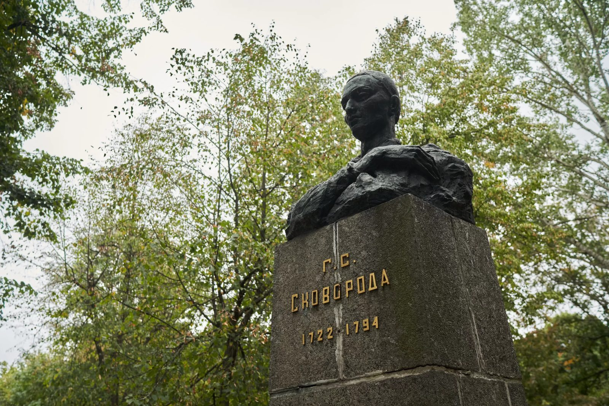
The tombstone with the engraved cross didn’t go well with the false image of “an atheistic philosopher”, propagated by the Soviets, so it was changed to a granite slab weighing a couple of tons. The exposition of the museum corresponded to this. It contained a huge painting by a Ukrainian and Soviet artist Adolf Konstantynopolsky depicting Skovoroda relinquishing the Bible and the cross. The philosopher was described as an ascetic vagrant who “lived with simple people and disliked the church”.
This exposition stayed in the museum until 2000 when the building was restored; and six years later, a new exposition was built under the management of a researcher of philosopher’s biography and oeuvre Leonid Ushkalov. In 2012, the Soviet tombstone was dismantled, and the one from 1874 was returned.
In 2021, the administrative premises were under repair, and the funds were transferred to the museum premises. After February 24, 2022, Natalia Mytsai, the director of the museum, evacuated the most valuable exponents, and the rest were packed and prepared for the second stage of the evacuation.
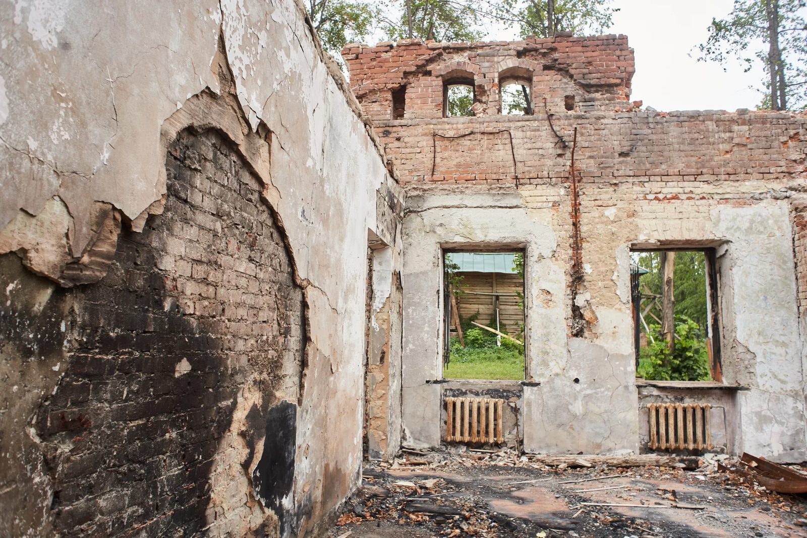
At night on May, 7, the Russians attacked the building with the Caliber missile; in their words, there was a strategic command point. The missile didn’t miss, unfortunately. The custodian miraculously survived by having gone out on the porch to talk on the phone.
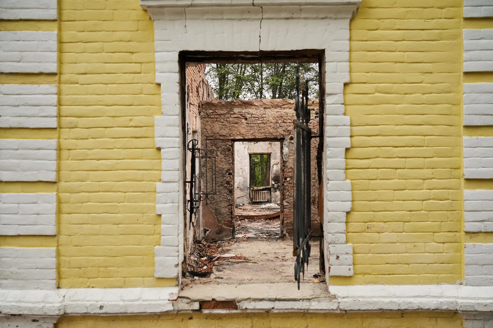
We visited Skovorodynivka four months after the attack. We were met by the Head of the Research Department Hanna Yarmish. She emphasized that the museum was ruined, but wasn’t destroyed. The most valuable exponents - the violin that Hryhorii Skovoroda played (it was on the first version of the 500 hryvnias bill), the watch with his autograph, books from the times of the philosopher, and a chest of Andrii Kovalivsky, - all were evacuated in time. The tombstone and the bust made by Kavaleridze were also left intact, being located at some distance from the building.
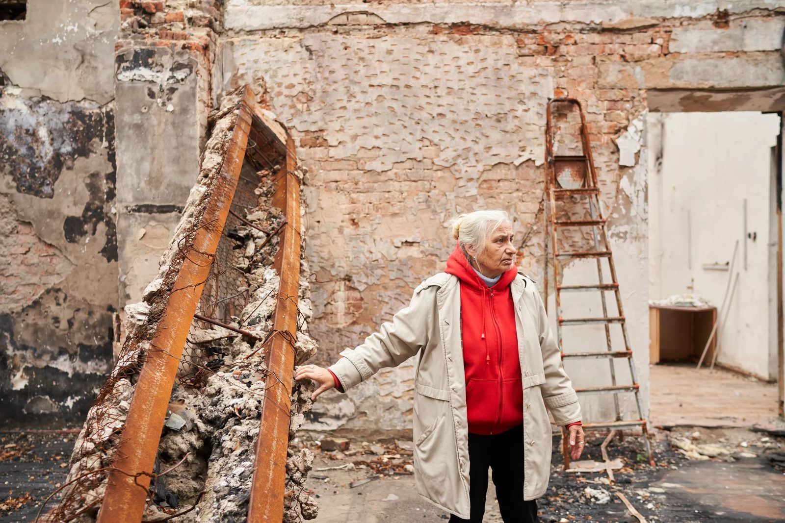
The Caliber missile is made for long distances, and it’s very close to Russia from Skovorodynivka, so there was a lot of fuel left. That’s why the building isn’t just ruined but burned to the ground. A part of the collection of literature on the life and work of Skovoroda, a woodcut that depicted the philosopher’s life, and a piano were lost in the attack, but the walls and the columns that remember Skovoroda are still standing.
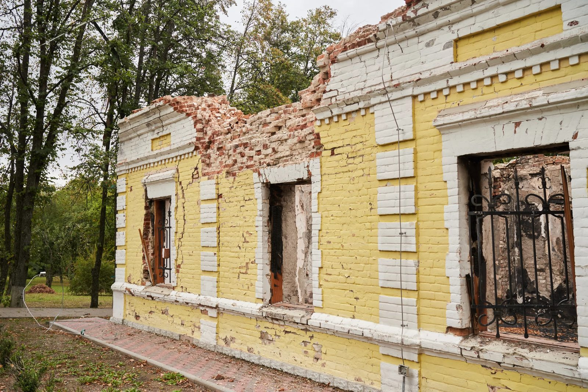
The 700-hundred-year-old oak at the pond, where Skovoroda liked to work, looks similar. The Soviet gardeners had poured concrete into its hollow. After that, the tree withered and fell after a storm. A part of the stem is all that remains now.
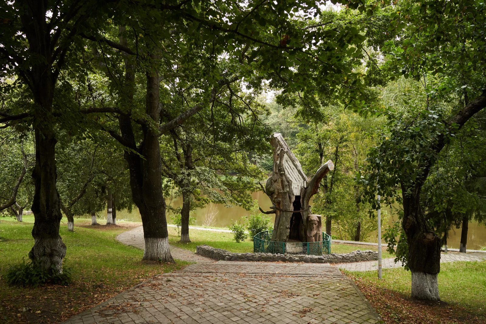
The Museum of Skovoroda actively does research. Every October, 50-60 philosophers gather here for international Skovoroda readings. They were held at the Karasin University in Kharkiv first but later were transferred to the museum in Skovorodynivka, which also publishes collections of reports. In May, conferences for teachers, local history enthusiasts, and historians who research Skovoroda are held, and student conferences on November, 9. This October, traditional Skovoroda Readings will be held despite all.
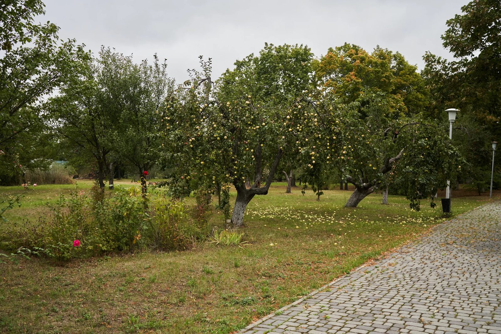
The museum also attracts people by reviving folk traditions and using the potential of the picturesque park. Thousands of people come here every year for Ivana Kupala (is a traditional Slavic holiday that was originally celebrated on the shortest night of the year. Later the Church connected it to the birthday of John (Ivan) the Baptist).
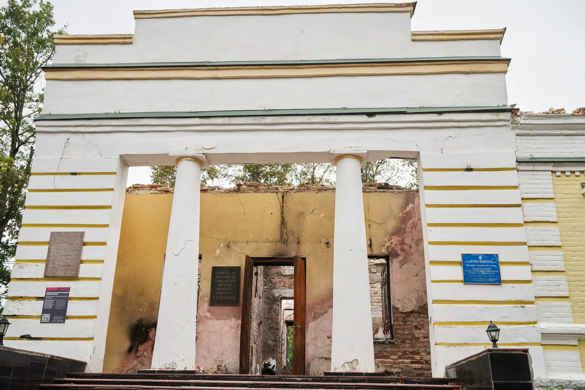
Volunteers have helped clean the ruined premises and buy materials for a temporary cover so that the walls don’t fall.
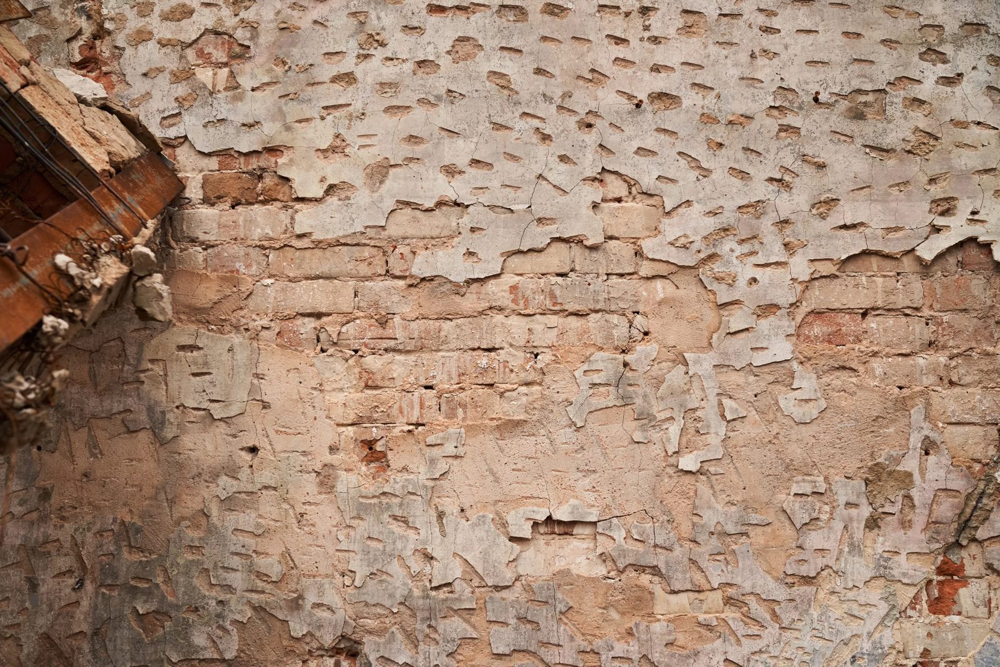
Mrs. Hanna knows the biography of Skovoroda and the history of the museum really well. She has given us a tour even without any exponents.
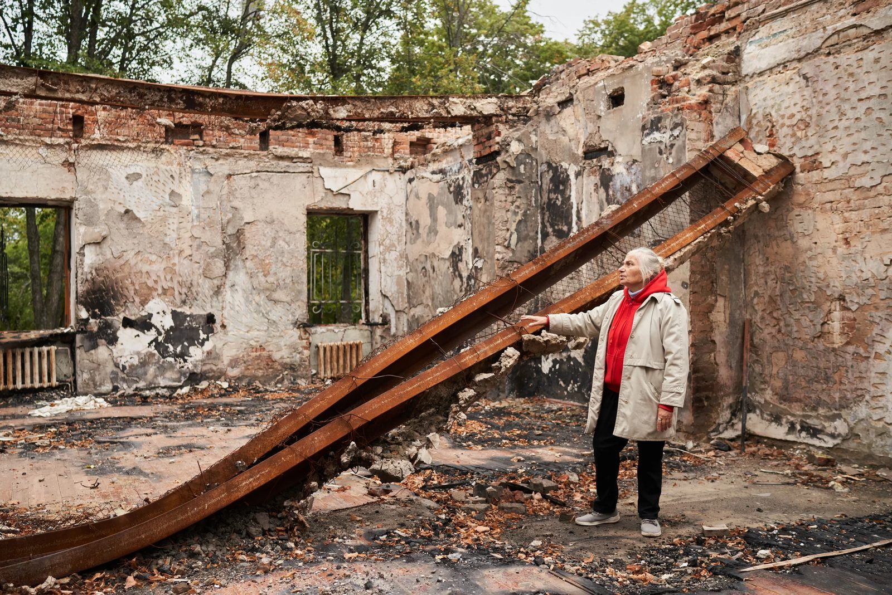
In the central hall of the museum, there was a monument to Skovoroda. It was saved and is currently being restored. A month after the attack on the museum in Skovorodynivka, the Russians targeted Kharkiv Pedagogical University named after Skovoroda. There was also a monument to the philosopher there, and it also was saved by some miracle.
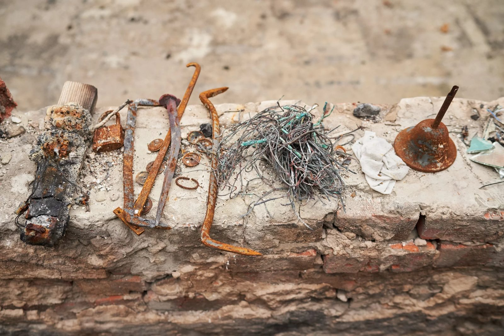
In December 2022 was the 300th anniversary of the philosopher’s birth. Russians deem Skovoroda theirs. Russian Wikipedia states that he is “a Russian and a Ukrainian vagrant philosopher”. But they have shown their real attitude to Skovoroda very transparently.
On the museum’s central alley, there are the philosopher’s aphorisms. One of them states: “Spiritual weapon is stronger than the embodied one”.
A series of reports was carried out with the support of the Documenting Ukraine project from the Institut für die Wissenschaften vom Menschen.